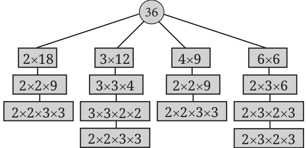
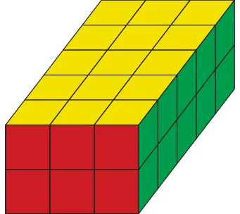

Checking if two numbers are co-prime
Teacher: Are 56 and 63 co-prime? Anshu and Guna: If they have a common factor other than 1, then they are not co-prime. Let us check. Anshu: I can write \(56 = 14 \times 4\) and \(63 = 21 \times 3\). So, 14 and 4 are factors, of 56. Further, 21 and 3 are factors of
- So, there are no common factors. The numbers are co-prime. Guna: Hold on. I can also write \(56 = 7 \times 8\) and \(63 = 9 \times 7\). We see that 7 is a factor of both numbers, so, they are not co-prime. Clearly Guna is right, as 7 is a common factor. But where did Anshu go wrong? Writing \(56 = 14 \times 4\) tells us that 14 and 4 are both factors of 56, but it does not tell all the factors of 56. The same holds for the factors of 63. Try another example: 80 and 63. There are many ways to factorise both numbers.
\(80 = 40 \times 2 = 20 \times 4 = 10 \times 8 = 16 \times 5 =\) ??? \(63 = 9 \times 7 = 3 \times 21 =\) ???
We have written ‘???’ to say that there may be more ways to factorise these numbers. But if we take any of the given factorisations, for example, \(80 = 16 \times 5\) and \(63 = 9 \times 7\), then there are no common factors. Can we conclude that 80 and 63 are co-prime? As Anshu’s mistake above shows, we cannot conclude that as there may be other ways to factorise the numbers. What this means is that we need a more systematic approach to check if two numbers are co-prime.
Prime factorisation
Take a number such as 56. It is composite, as we saw that it can be written as \(56 = 4 \times 14\) . So, both 4 and 14 are factors of 56. Now take one of these, say 14. It is also composite and can be written as \(14 = 2 \times 7\). Therefore, \(56 = 4 \times 2 \times 7\). Now, 4 is composite and can be written as \(4 = 2 \times 2\). Therefore, \(56 = 2 \times 2 \times 2 \times 7\). All the factors appearing here, 2 and 7, are prime numbers. So, we cannot divide them further. In conclusion, we have written 56 as a product of prime numbers. This is called prime factorisation of 56. The individual factors are called prime factors. For example, the prime factors of 56 are 2 and 7. Every number greater than 1 has a prime factorisation. The idea is the same: keep breaking the composite numbers into factors till only primes are left. The number 1 does not have any prime factorisation. It is not divisible by any prime number. What is the prime factorisation of a prime number like 7? It is just 7 (we cannot break it down any further). Let us see a few more examples. By going through different ways of breaking down the number, we wrote 63 as \(3 \times 3 \times 7\) and as \(3 \times 7 \times 3\). Are they different? Not really! The same prime numbers 3 and 7 occur in both cases. Further, 3 appears two times in both and 7 appears once. Here, you see four different ways to get prime factorisation of 36. Observe that in all four cases, we get two 2s and two 3s. Multiply back to see that you get 36 in all four cases. For any number, it is a remarkable fact that there is only one prime factorisation, except that the prime factors may come in different

orders. As we explain below, the order is not important. However, as we saw in these examples, there are many ways to arrive at the prime factorisation!
Does the order matter?

Using this diagram, can you explain why \(30 = 2 \times 3 \times 5\), no matter which way you multiply 2, 3, and 5? When multiplying numbers, we can do so in any order. The end result is the same. That is why, when two 2s and two 3s are multiplied in any order, we get 36. In a later class, we shall study this under the names of commutativity and associativity of multiplication. Thus, the order does not matter. Usually we write the prime numbers in increasing order. For example, \(225 = 3 \times 3 \times 5 \times 5\) or \(30 =\)
\(2 \times 3 \times 5\).
Prime factorisation of a product of two numbers
When we find the prime factorisation of a number, we first write it as a product of two factors. For example, \(72 = 12 \times 6\). Then, we find the prime factorisation of each of the factors. In the above example, \(12 = 2 \times 2 \times 3\) and \(6 = 2 \times 3\). Now, can you say what the prime factorisation of 72 is? The prime factorisation of the original number is obtained by putting these together.
\(72 = 2 \times 2 \times 3 \times 2 \times 3\)
We can also write this as \(2 \times 2 \times 2 \times 3 \times 3\). Multiply and check that you get 72 back! Observe how many times each prime factor occurs in the factorisation of 72. Compare it with how many times it occurs in the factorisations of 12 and 6 put together.